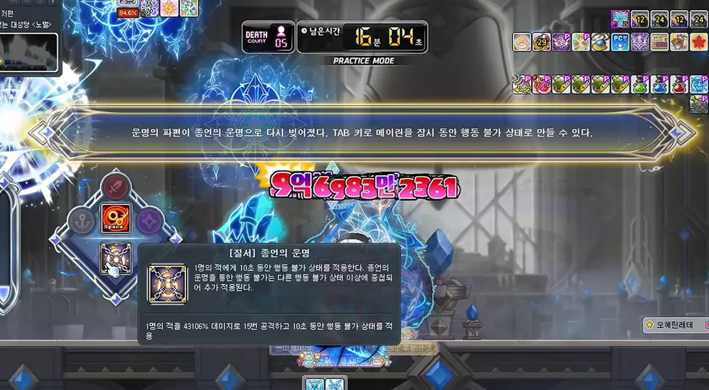
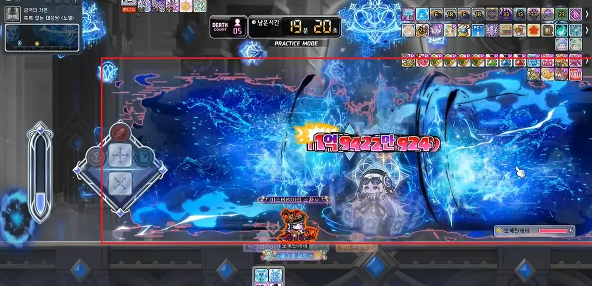

Hey everyone. This is the guide for Mayrin, the season boss of Challengers World. Here you'll find the boss details, the fate gauge and its skills, every pattern in phase 1 and phase 2, and the rewards, so you can decide if she's worth it.
Values use the format NormalHard: the first number is for Normal and the second is for Hard.
01
Boss overview
Mayrin is a solo boss with two phases in a single room. She is exclusive to Challengers World, so you can only fight her while the season lasts.
Mayrin, Guide of DestinyBoss entry window
Minimum level270280
PlayersSolo
Time limit20 min
Death Count5
Boss defense (PDR) is 380%.
Potion cooldown is 10 seconds.
You can clear her once per week, and Normal and Hard share that limit.
Total HP is 117.85 trillion on Normal and 580 trillion on Hard. Each phase has half.
Mayrin has a single HP bar. When it reaches 50%, she becomes invincible, the map changes and phase 2 begins.
How strong do you need to be?
As a reference:
Normal: slightly above Hard Verus Hilla and close to Normal Seren. About 21k converted HEXA stat is recommended.
Hard: her HP feels like something between Easy Kaling and Normal Kalos. About 46k converted HEXA stat is recommended, although many players kill her with less because the skills from other classes she gives you boost your damage a lot.
Still, I recommend using the Maple Scouter to check your numbers.
These values come from KMS and may differ in GMS.
Entry map
Entry animationMayrin in phase 1Mayrin in phase 2
02
Fate gauge and skills
This is the mechanic that makes Mayrin different from every other boss. Once you understand it, the fight gets much easier.
Interface: gauge on the left and class emblems next to it
Mechanic
Remnants of Fate (the gauge)
On the left side of the screen there is a gauge that fills up on its own over time.
Every time you clear a fate pattern, it fills up a lot more.
On Hard, the gauge goes down when an attack hits you. On Hard it also fills much less when you clear fate patterns.
If you clear a fate pattern using invincibility, you get no charge.
Fate gaugeClass emblems
Mechanic
Chaos: skills from other classes
When the gauge is full, an altar appears in the middle of the map.
Go to the altar and interact with it. You choose 1 of 3 skills from other classes, almost always 5th job skills, and you can use it once.
You have about 10 seconds to interact. If you don’t, the altar disappears and the gauge resets.
You can only hold one skill at a time. If you pick another one, you lose the one you had, even if it is active. Use it before going back to the altar.
Choosing a skill at the altar
Every skill is useful, but these are the most recommended:
Evan (Zodiac Ray): the highest damage.
Hoyoung (Scroll: Tiger of Songyu): the second highest damage.
Phantom (Joker) and Angelic Buster (Spotlight): besides the damage, they give you an extra buff.
The only one worth avoiding is the Night Lord skill, because it forces you to fight up close.
Mechanic
Order: the special buff
Above the gauge there are 3 class emblems (warrior, magician, bowman, thief or pirate).
If you pick skills from those 3 classes at the altar, you complete the emblems and get a random special buff.
Careful: the altar can also offer classes that are not in your emblems. If you pick one of those, the emblem does not light up.
You use the buff with the TAB key, and you can also hold only one at a time.
Buff
What it does
Fate of Termination
Locks Mayrin in place for 10 seconds, even if she is already immune to binds, and deals a lot of damage. It is the most used one for burst.
Fate of Destruction
+20% final damage for 15 seconds.
Fate of Origin
Resets the cooldown of your Origin skill.
Fate of Regression
Resets the cooldowns of your 5th job and lower skills. It does not reset the boss’s bind resistance.
Fate of Ascension
Gives you 1 more use of your Ascent skill. Usually the least useful.
Destruction buff: +20% final damage

Termination buff: locks Mayrin in place
The big picture: fate patterns come every 55 seconds, so if you clear them well you get an extra burst skill almost every minute. Even so, if you have enough damage you can kill her without using any of this.
03
Map attacks
These attacks happen during the whole fight, in both phases.
Map
Ceiling projectiles
Damage
10%15% of your HP
Three rifts on the ceiling fire projectiles in a fan shape, changing direction all the time.
How to dodge it: Watch where the rifts are and leave yourself room to move. They hurt more on Hard, so don’t stay in their line of fire.
Rifts on the ceiling
Map
Diagonal distortion
Damage
25%40% of your HP
Distortions appear from the bottom left or bottom right corner and move diagonally, 3 at a time.
They explode in the same order they appeared.
On Hard, getting hit also lowers the fate gauge.
How to dodge it: Watch the order they appear in and move toward the ones that already exploded. You can’t dodge the lowest one by crouching.
Map distortions
04
Phase 1
Mayrin enters the map with a fairly long animation. You can start hitting her at 19:47 on the timer.
“I-it’s you... Ah! That was a mistake... I’ll do my best!”
다, 당신이군요... 앗! 이건, 실수라... 저, 힘내볼게요!
Mayrin’s attacks
Mayrin attack
Eye waves
Damage
30%40% of your HP
Effect
Stun
Mayrin closes her eyes, floats a little as if praying, and on the way down sends blue waves to both sides.
An eye appears above her head. That eye tells you what to do.
How to dodge it: If the eye is open, face Mayrin. If it is closed, turn your back to her. If you get it wrong, it hits you even if you crouch. It also hits you if you are standing right next to her.
Open eye: face MayrinClosed eye: turn your back

Range of the waves
Mayrin attack
Hands of Fate
Damage
30%40% of your HP
Effect
Knockback on the 2nd hit
Mayrin brings her hands together and sends a hand-shaped wave. Then she raises her arms and sends a second wave.
How to dodge it: Crouch. Both hits can be dodged by crouching. The first one takes a while to come out and the second follows right away, so as soon as you see the motion, crouch or get behind her.
Hands of Fate
Mayrin attack
Shadow Sword, Aquila
Damage
30%40% of your HP
Mayrin shows a sword above her head and attacks twice.
1st hit: she creates 3 magic circles in the air in front of her, and a blade drops from each one to the ground.
2nd hit: she slashes in an X shape toward where you were when the first hit ended.
How to dodge it: Stay right next to Mayrin and neither hit will touch you. You can also stand between the effects, because it only hits where the attack is shown.
Blades and X slash
Mayrin attack
Charge
Damage
30%40% of your HP
Effect
Knockback
Mayrin prays and marks an area in front of her split into two halves, top and bottom. One half is dark blue and the other is light blue, and they switch randomly. Then she charges.
How to dodge it: Only the light blue half deals damage. Stand in the dark blue half: if it is on top, jump; if it is on the bottom, crouch.
Charge in a real fightCharge animation
Mayrin attack
Teleport
Damage
25%30% of your HP
Effect
Knockback
If you move more than 700 px away from Mayrin or jump higher than 300 px, she teleports under you and releases an explosion.
It comes out very fast and has good range, so it is hard to dodge.
How to dodge it: The best way is not to trigger it: fight right next to her. If it happens anyway, move away quickly, because the teleport itself does no damage, only the explosion after it.
Teleport and explosion
Fate patterns
Mayrin uses one of these patterns every 55 seconds. She doesn’t defend herself while doing it, so it’s a good time to hit her. If you clear it, the fate gauge fills up a lot.
Fate pattern
Realm of Repose (the circle)
Repetitions
3 times5 times
If you fail
50%70% of your HP + stun
Three-level platforms appear in the middle and Mayrin teleports to the second level.
A purple circle with a blue section closes in around her.
The blue section only appears top left, top center or top right, and it can repeat.
How to dodge it: Touch the blue section of the circle with your character. If you pass through it with a teleport, you get no charge.
Realm of Repose
Fate pattern
Helia Concerto (fire and ice swords)
Repetitions
5 slashes7 slashes
If you fail
50%70% of your HP
Mayrin goes to the middle, summons a light blue sword and splits it into a fire sword and an ice sword.
A sun or moon symbol with a number appears above your head.
With every slash, the map fills with diagonal fire and ice zones.
The number only goes down when you step into the right zone. When it reaches 0, the symbol always switches.
On Hard, the slashes come much faster.
How to dodge it: Always step into the zone that matches the symbol above your head, not the sword Mayrin is using. A trick: stand next to the left pillar closest to Mayrin and just jump in place.
Fire and ice swords
Fate pattern
Arrow of Fate
Repetitions
4 arrows7 arrows
If it hits you
50%70% of your HP
Mayrin goes to the middle and a purple spirit appears in the sky with a warning line aimed at you.
The line fills up, stops, and then an arrow fires.
The arrows come from points that move from one end of the map to the other. On Hard, once they reach the end, they come back.
How to dodge it: The goal is for the arrow to go through the spirit. Since the spirits are around the middle, lead the arrow toward Mayrin. With a dash or a teleport at the right moment it is pretty easy.
Arrows of Fate
Fate pattern
Cards of Truth and Lies
Shuffles
4 times6 times
If you fail
80%Death
Mayrin flips a card showing day and night split in half. That is the true card.
Then she flips it back and shuffles all the cards.
At the end, the true card glows yellow and is the safe zone. The rest turn into blades that strike from the floor to the ceiling.
How to dodge it: Keep your eyes on the true card from the moment she shows it, and stand under it at the end. On Hard, failing means instant death, so focus only on that card.
Cards of Truth and Lies
Tips for phase 1
Always fight right next to Mayrin. That way you dodge Aquila and avoid the teleport.
Learn the eye well: open, face her; closed, turn your back.
On the charge, always look for the dark blue half.
Fate patterns are your priority, because they are what give you the extra skills.
05
Phase 2
When Mayrin reaches 50%, she cancels any extra damage, removes all debuffs (binds included) and transforms. The map changes and so does her personality: she goes from shy to aggressive. Don’t spend your burst right as she hits 50%, because that damage is lost.
“You reject... fate...? Then... I’ll crush you right now!”
운명을... 거부하시는 건가요...? 그렇다면... 지금 바로 짓밟아줄게...!
Mayrin’s attacks
They are the same attacks as phase 1, with a few extra hits.
Mayrin attack
Eye waves (x2)
Damage
30%40% of your HP
Effect
Stun
She uses the eye attack twice in a row. The eye always shows up once open and once closed, in any order.
How to dodge it: As soon as the first one passes, get ready to do the opposite on the second.
Eye waves in phase 2
Mayrin attack
Hands of Fate + tracking circle
1st and 2nd hit
30%40% of your HP
3rd hit
50%55% of your HP
After the two waves, she sends a magic circle that follows you, above or below your character.
After 3 seconds the circle stops and a hand comes out and strikes that spot.
If it hits from above, you get stunned. If it hits from below, you get launched into the air.
This is the trickiest attack of the fight.
How to dodge it: Crouch for the first two waves, and as soon as the circle stops, move to the side.
Hands and tracking circle
Mayrin attack
Shadow Sword, Aquila + floor spear
1st and 2nd hit
30%40% of your HP
3rd hit
50%55% of your HP + airborne
After the blades and the X, a magic circle appears on the floor in front of her and a spear shoots up toward where you were.
How to dodge it: Same as phase 1: stay right next to Mayrin. If you dodged between the effects, check right away where the spear will come out.
Blades and floor spear
Mayrin attack
Charge
Damage
30%40% of your HP
Effect
Knockback
Same as phase 1.
How to dodge it: Stand in the dark blue half.
Mayrin attack
Teleport (x2)
Damage
40%50% of your HP
Effect
Knockback
It triggers the same way as in phase 1, but now it releases 2 explosions and each one deals damage.
How to dodge it: Keep fighting right next to her. If she teleports, move away and check your position after the first explosion.
Teleport with two explosions
Fate patterns
The 4 fate patterns from phase 1 keep coming, and 2 more are added.
Fate pattern
Devouring Storm
If you fail
80%Death
A message tells you whether the storm comes from the left or the right, and a golden zone appears on the map.
After 3 seconds the storm arrives and pushes you. Half a second later, crossing blades fall over the whole map.
If you are inside the golden zone, it turns into a shield that protects you.
How to dodge it: Position yourself so the storm pushes you into the golden zone. If that is too hard, stay inside the zone and use your Ascent or an invincibility skill so it doesn’t move you. If you missed the message, look at the blue laser on the ceiling: it moves in the direction of the wind, and if it has a purple swirl, the push is strong.
Storm and golden zone
Fate pattern
Soul Swords
Repetitions
3 flashes5 flashes
If it hits you
50%70% of your HP
Mayrin creates 3 swords up top: left, center and right. A protection emblem appears above your head.
The swords flash several times. Then they strike the floor in that same order and release very wide shockwaves.
The same sword can strike more than once. If a shockwave hits you, you lose the emblem and fail the pattern.
How to dodge it: Remember the order they flash in and stay away from each sword when it’s its turn. This is Mayrin’s most unfair pattern, because the shockwaves cover almost the whole map, so using your Ascent or an invincibility here is recommended. On Normal one invincibility is enough. On Hard you need more invincibility time or to do the pattern properly.
Soul Swords
Tips for phase 2
The most dangerous attack is the hands with the circle: when the circle stops, get out of there.
Save your Ascent or an invincibility for the Soul Swords.
During the storm, don’t resist: let the wind carry you into the golden zone.
If you already master phase 1, phase 2 shouldn’t be too hard, because it’s almost the same with extra hits.
06
Rewards
When you defeat her, Mayrin disappears into a portal of cards. To get your rewards, enter the reward map and break the Forbidden Relic, which has 100,000 HP.
“It can’t be... I never saw this fate coming...!”
이럴 수는... 이런 운명은 보이지 않았는데...!!
Relic in the reward map
Reward
Normal
Hard
Golden Meso Pouches
30
60
Sol Erda energy
400
550
Sol Erda Fragment Box
Basic
Advanced
Mayrin’s Pitch Black Accessory Box
Yes
Yes
Eternal Armor Boxes (2 types)
No
Yes
Shifting Fate Fragment
No
2
Premium scroll vouchers (accessory, pet equipment, weapon)
No
Yes
First clear
Guide of Destiny face, hair and outfit coupons
Nametag and chat bubble ring, and Mayrin soul box
The boxes last 7 days and are untradeable. Names and amounts are from KMS.
Is she worth it?
If you are in Challengers World, yes. Normal already gives you Pitch Black accessories and Sol Erda fragments, and it is required for several season missions. But if you can handle Hard, that’s where the best part is: double the mesos, advanced fragments and the Eternal armor boxes.
With this you have everything you need to take on Mayrin. Good luck on your runs, and I hope you get the best drops.
07
Credits
This guide is based on guides from the Korean community. Credit and thanks to their authors. The images and videos come from those guides, and I will replace them with my own recordings.